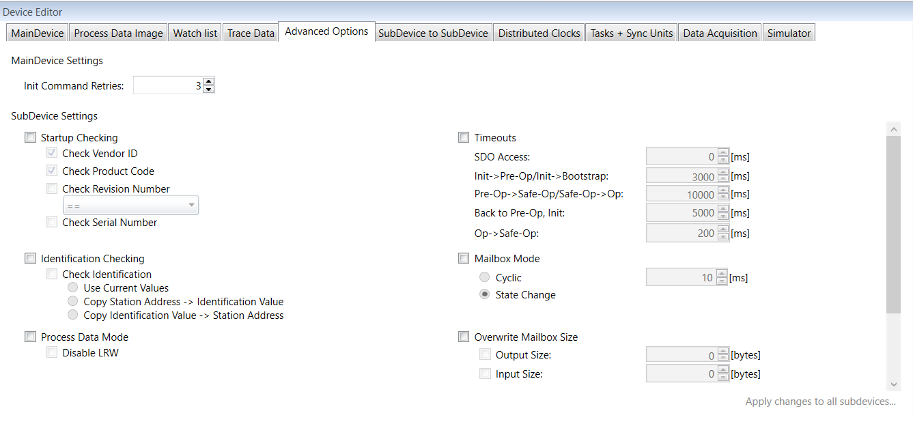

The Advanced Options tab is available in the Device Editor pad when selecting in the Project Editor a Main-device and with the Expert Settings enabled.
In this tab, you can change Main-device specific settings. You can also change Sub-device specific settings which are then applied to all Sub-devices.

Main-Device Settings
Init Command Retries; Number of retries, to handle transmission errors.
Apply changes to all Sub-devices; Applies the settings changes done in this tab to all Sub-devices.
Sub-Device Settings
Startup Checking; Tick its checkbox to activate startup checking.
Check Vendor ID; Check the description in the Sub-device Advanced Options Tab topic.
Check Product Code; Check the description in the Sub-device Advanced Options Tab topic.
Check Revision Number; Check the description in the Sub-device Advanced Options Tab topic.
Check Serial Number; Check the description in the Sub-device Advanced Options Tab topic.
Identification Checking; Tick its checkbox to activate identification checking.
Check Identification; Tick its checkbox to activate check identification then choose between:
Use Current Value; Activates identification checking for all Sub-devices with their current values as identification value.
Copy Station Address -> Identification Value; Activates identification checking for all Sub-devices with the station address as identification value.
Copy Identification Value -> Station Address; Activates identification checking for all Sub-devices and the identification value is also used as station address.
Process Data Mode; Tick its checkbox to activate process data mode.
Disable LRW; Check the description in the Sub-device Advanced Options Tab topic.
Overwrite Watchdog; Tick its checkbox to activate overwriting watchdog.
Set Multiplier; Check the description in the Sub-device Advanced Options Tab topic.
Set PDI Watchdog; Check the description in the Sub-device Advanced Options Tab topic.
Set SM Watchdog; Check the description in the Sub-device Advanced Options Tab topic.
Timeouts; Tick its checkbox to activate timeouts.
SDO Access; Check the description in the Sub-device Advanced Options Tab topic.
Init -> Pre-Op/Init -> Bootstrap; Check the description in the Sub-device Advanced Options Tab topic.
Pre-Op -> Safe-Op/Safe-Op -> Op; Check the description in the Sub-device Advanced Options Tab topic.
Back to Pre-Op, Init; Check the description in the Sub-device Advanced Options Tab topic.
Op -> Safe-Op; Check the description in the Sub-device Advanced Options Tab topic.
Mailbox Mode; Tick its checkbox to activate mailboxing.
Cyclic; Check the description in the Sub-device Advanced Options Tab topic.
Stat Change; Check the description in the Sub-device Advanced Options Tab topic.
Overwrite Mailbox Size; Tick its checkbox to activate overwriting mailbox size.
Output Size; Check the description in the Sub-device Advanced Options Tab topic.
Input Size; Check the description in the Sub-device Advanced Options Tab topic.
Process Data Sync Manager Mode; Tick its checkbox to activate process data sync manager mode.
Default; Check the description in the Sub-device Advanced Options Tab topic.
Buffered (3 buffer mode); Check the description in the Sub-device Advanced Options Tab topic.
Mailbox (Single buffer mode); Check the description in the Sub-device Advanced Options Tab topic.